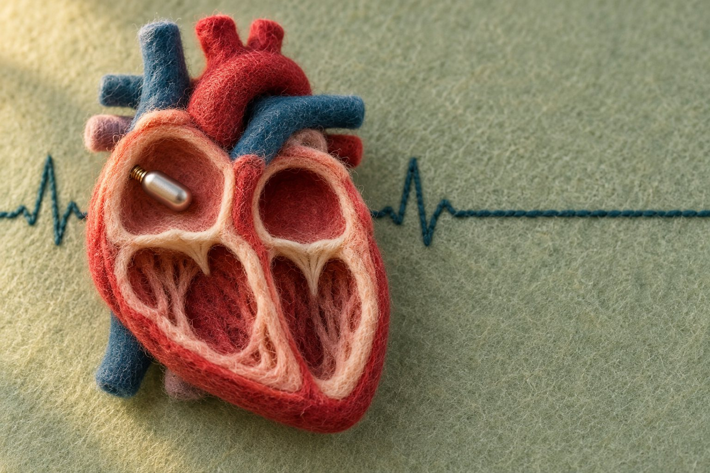

心房型無導線心臟節律器是什麼？病竇症候群適合嗎、和心室型、雙腔系統差在哪

本篇重點
心房型無導線心臟節律器是放進右心房、只刺激心房的節律器，研究對象是病竇症候群；心室型只刺激心室，雙腔系統則在右心房、右心室各放 1 顆。目前心房型的研究資料還不多，追蹤也短，75 人研究的收案條件也排除了有高度房室傳導阻滯臨床證據的人。適不適合要由心臟科醫師評估；健保 2026 年 12 月 1 日起把心房型寫進給付規定，但只限裝不了傳統節律器的人，多數人要自費。
心房型無導線心臟節律器是放進右心房、沒有導線的節律器，研究對象是病竇症候群。2026 年 12 月 1 日起健保把心房型寫進給付規定，但只限裝不了傳統節律器的人，多數人要自費。
心房型無導線心臟節律器是什麼？
心房型無導線心臟節律器把電池和電路封在一個小圓柱裡，醫師經導管從大腿根部的股靜脈送進心臟，固定在右心房，只刺激心房。2025 年美國 3 個中心、75 人研究所用的心房型，直徑約 6.5 毫米、長約 3.2 公分，以雙螺旋固定在心房壁上。心房型沒有導線，也不用在胸前做放電池的皮下囊袋。
本文引用的兩項心房型研究（75 人研究與後面的 Europace 理賠資料研究），用的是同一款心房型裝置；75 人研究的作者寫道，當時沒有其他心房型可以拿來比較。所以這些數字只代表這一款，不能說成所有心房型。
馬偕紀念醫院的衛教資料說明，單腔節律器只用一條導線連接心臟腔室，一般接右心室，少部分接右心房。
病竇症候群為什麼要照顧心房？
病竇症候群是心臟的發電起點「竇房結」出問題，可能造成心跳過慢。臺大醫院健康電子報的衛教文章說明，心電從右心房的竇房結出發，傳到房室結，再傳到心室；心電從心房傳到心室的這一段，就是房室傳導。
病竇症候群的起點在心房，節律器若只刺激心室，可能出現「節律器症候群」。2026 年 PACE 期刊的一篇回顧文章說明，這是心房與心室收縮的時間對不上（房室不同步）造成的，症狀包括疲倦、喘、頭暈、血壓偏低、心悸。歐洲心臟學會 2021 年節律器指引寫到，雙腔節律可降低節律器症候群的風險，這個問題在超過四分之一的病竇症候群病人可能出現。
2002 年 MOST 試驗收了 2,010 位病竇症候群病人，隨機分成雙腔節律與只刺激心室兩組，追蹤中位數 33.1 個月。死亡或非致命中風，兩組沒有顯著差異（21.5% 對 23.0%）；雙腔組的心房顫動風險較低（風險比 0.79）。
指引優先建議雙腔節律。指引引用 DANPACE 試驗：傳統導線只刺激心房的組別，與雙腔組相比，不分原因的死亡率沒有差異，但再次手術的風險約為兩倍，每年有 0.6% 到 1.9% 的人出現房室傳導阻滯。這些是傳統導線的資料，不能直接套用到心房型無導線心臟節律器，合不合適要看個人狀況。
誰適合心房型無導線心臟節律器？
適不適合要由醫師評估。上述 2025 年 75 人研究收的是 18 歲以上、符合節律器植入標準、沒有高度房室傳導阻滯臨床證據的病竇症候群病人。
臺大醫院衛教文章說明，房室結出問題時，竇房結雖然正常放電，訊號卻傳不下去，依然會心跳過慢。75 人研究的收案條件排除了有高度房室傳導阻滯臨床證據的人，所以研究結果不能直接套用在他們身上；機型由醫師依病人需求選擇。
75 人研究的作者在前言提到，這套系統可以先植入心房那一顆，需要升級為雙腔時，再植入心室那一顆，組成雙腔系統。這是作者（含廠商員工）對系統設計的說明，不是臨床試驗結果。
美國心臟病學會整理了歐洲心臟學會 2021 年指引的重點：沒有上肢靜脈可用，或囊袋感染風險特別高（例如曾經感染、洗腎）時，應考慮以無導線取代傳統節律器。指引內文描述的是植入右心室壁的無導線節律器，也寫明沒有隨機對照資料比較無導線與單腔傳統節律器，所以這項建議不能直接當成心房型的建議。
心房型、心室型、雙腔系統差在哪？
三種無導線選項差在放幾顆、放哪裡、刺激哪個心腔。
| 項目 | 心房型 | 心室型 | 雙腔系統 |
|---|---|---|---|
| 放在哪裡 | 右心房，1 顆 | 右心室，1 顆 | 右心房、右心室各 1 顆 |
| 刺激哪個心腔 | 只刺激心房，心室靠身體自己的傳導 | 只刺激心室，不能心房起搏 | 心房、心室都能刺激，兩顆互相溝通 |
| 房室同步 | 靠身體自己的房室傳導 | 沒有穩定的房室同步 | 廠商贊助的單組研究，97.3% 的病人在 3 個月時、坐姿下達到 70% 以上同步 |
| 研究收的病人 | 75 人研究：病竇症候群、房室傳導正常 | 本文未引用研究 | 300 人研究：190 人病竇症候群、100 人房室傳導阻滯 |
| 健保（12 月 1 日起） | 可申請，限裝不了傳統節律器的人 | 可申請，限裝不了傳統節律器的人 | 沒有一次裝兩顆的項目；可先裝心房型，之後出現房室傳導阻滯再申請心室型 |
表中雙腔的數字，以及心室型不能心房起搏、沒有穩定房室同步的說明，都來自《新英格蘭醫學期刊》2023 年 300 人研究（廠商贊助、單組、沒有對照組）；這 300 人中，29 人出現與裝置或手術相關的嚴重不良事件。
除了刺激哪個心腔，生活上的差別也值得一起想：無導線節律器胸前沒有電池主機和縫合的痕跡，術後手臂也不用限制；心房型又讓心臟照原本的順序跳。對在意生活品質的病竇症候群病人，這是可以和醫師好好討論的選擇，完整說明請看〈想顧生活品質，無導線節律器值得考慮嗎？〉。
健保怎麼給付？
先講結論：健保只給付裝不了傳統節律器的人，這只是少數；多數想裝無導線節律器的人是自費。2026 年 12 月 1 日起，健保依心跳慢的原因分三種申請：問題在心房（病竇症候群）、心房到心室的傳導還正常，申請心房型；長期的心房顫動（持續性或永久性）合併房室傳導阻滯，申請心室型，先裝了心房型、後來才出現房室傳導阻滯的人，也可以再申請心室型；房室傳導阻滯、但沒有長期的心房顫動，心房還能正常跳，申請能感應心房的心室型。
三種都要先符合「裝不了傳統節律器」：例如兩邊鎖骨下的靜脈塞住、上腔靜脈變窄或塞住、有洗腎用的廔管或導管、胸前放了化療用的人工血管，或胸前裝置的位置曾經感染、開刀清創，胸前做過腫瘤切除、放射治療，或有嚴重燒燙傷。醫院會先幫病人送健保審查，通過才能用健保；不符合的人可以選擇自費，費用請向醫院詢問。
12 月 1 日以前，健保條文沒有另外寫到心房型。新病人一次同時裝心房、心室兩顆，新規定也沒有列。細節以健保署公告為準，能不能申請請向醫院確認。
心房型無導線心臟節律器的研究資料夠多嗎？
目前資料還不多，追蹤也短。75 人研究全部植入成功，30 天內沒有不良事件（含穿孔）；作者寫明限制是樣本小、追蹤短、沒有對照組，樣本太小也無法對併發症發生率下統計結論，3 位作者是廠商員工。
2026 年《Europace》期刊的美國聯邦醫療保險（Medicare）理賠資料回溯分析，是期中報告，由廠商出資、作者含廠商員工。它納入 428 位心房型病人、39,881 位傳統雙腔、389 位傳統右心房單腔。30 天併發症校正後，心房型 6.9%、傳統雙腔 9.4%，與傳統右心房單腔（6.7%）相近。一年追蹤的整體併發症，心房型 3.6%、傳統雙腔 8.5%；一年的項目清單與 30 天不同，沒有列心包積液與穿孔。裝置栓塞（脫落）在心房型組為 0.2%、傳統雙腔組為 0%；心包積液、穿孔或心包填塞在三組沒有顯著差異。一年死亡率相近。各組收案條件不同（傳統雙腔組限定沒有房室傳導阻滯與永久性心房顫動），也沒有隨機分組。
無導線心臟節律器也有自己的風險。2024 年一項納入 24 篇觀察性研究、78,938 人的統合分析，摘要沒有區分心房型或心室型，發現無導線組感染、導線或裝置移位較少，穿刺處併發症與心包積液或穿孔較多。
還有哪些常見問題？
病竇症候群一定要放心房型嗎？
不一定。歐洲心臟學會 2021 年指引優先建議的是雙腔節律（傳統導線），實際選哪一種由醫療團隊評估。
心房型無導線心臟節律器有健保給付嗎？
2026 年 12 月 1 日起有，但只給少數人：病竇症候群造成心跳太慢、心房到心室的傳導還正常，而且裝不了傳統節律器（例如血管塞住或變窄、有洗腎用的廔管或導管，或胸前裝置處感染開過刀、做過放射治療），並先通過健保審查。其他人想裝，要自費。
放了心房型之後，房室傳導變差怎麼辦？
可能需要再加放心室那一顆，組成雙腔系統，由醫師追蹤後判斷；追蹤頻率請依醫療團隊指示。
還可以看哪些相關文章？
- 無導線心臟節律器和傳統節律器差在哪
- 無導線心臟節律器兩種固定設計：之後取得出來嗎
- 誰適合無導線心臟節律器：心房型、心室型、雙腔怎麼選
- 無導線心臟節律器健保怎麼給付
- 無導線心臟節律器電池用完、做核磁共振怎麼辦
- 節律器衛教專區
- 心跳慢了怎麼辦？心臟節律器怎麼選
- 無導線心臟節律器，手照樣舉高高：萬聖節篇
- 無導線節律器怎麼放進去
- 裝了無導線節律器，日常生活怎麼過
本文為一般衛教，不能取代門診評估；適合哪一型，要由心臟科醫師依您的心電圖與狀況評估。
參考資料
- 健保署：無導線心律調節器給付規定修正對照表（B101-3、B101-4、B101-6，2026 年 12 月 1 日生效）
- 健保署：全民健康保險特殊材料給付規定（檔名 11511，含 2026 年 11 月 1 日生效項目；B101-3 無導線心律調節器、B101-4 雙腔無導線心律調節器）
- 行政院公報 2026-07-24：全民健康保險醫療服務給付項目及支付標準部分診療項目修正草案（含 47103A 無導線心律調節器置放術）
- 歐洲心臟學會 2021 心臟節律器與再同步治療指引（Eur Heart J 2021;42:3427）
- 美國心臟病學會：2021 ESC 節律器指引重點整理（無導線節律器的使用情境）
- MOST 研究：病竇症候群雙腔與心室節律比較（N Engl J Med 2002）
- 雙腔無導線節律器國際研究 300 人（N Engl J Med 2023，廠商贊助）
- 心房螺旋固定無導線節律器：真實世界單腔植入經驗，75 人（J Interv Card Electrophysiol 2025，3 位作者為廠商員工）
- 心房無導線與傳統節律器用於病竇症候群一年結果（Europace 2026，廠商出資的美國理賠資料回溯分析期中報告；全文）
- 無導線與傳統經靜脈節律器術後結果統合分析（Rev Cardiovasc Med 2024）
- 節律器症候群回顧（Pacing Clin Electrophysiol 2026）
- 臺大醫院健康電子報 2016：你的心臟沒電了嗎？
- 馬偕紀念醫院：人工心律調節器衛教資料（2021.10）
- 健保署：全民健康保險醫療服務給付項目及支付標準修正對照（47103A，2026 年 9 月 1 日生效）
每個人的狀況不同，文章不能取代門診評估。想知道自己適不適合，歡迎帶著過去的檢查報告來門診討論。